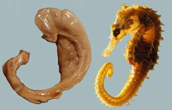
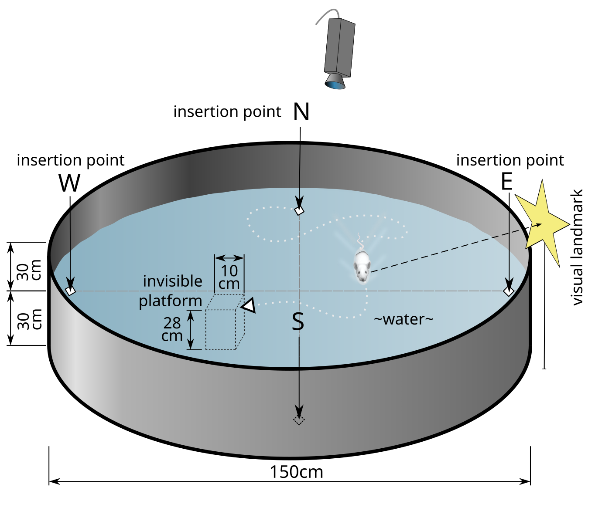
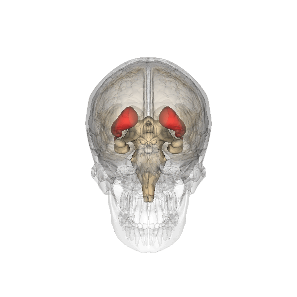
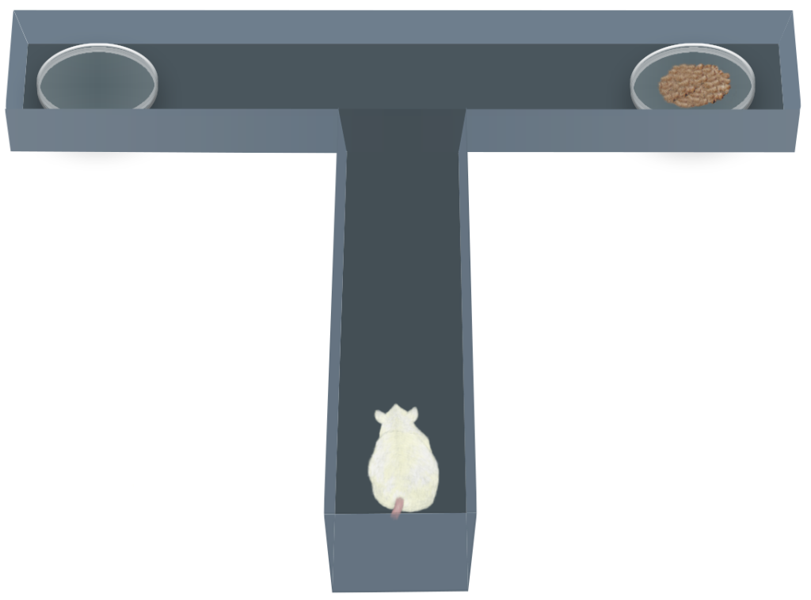
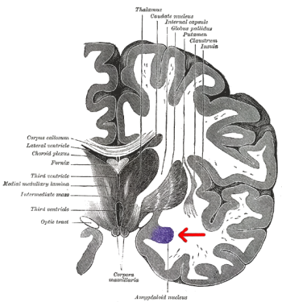

8.3: Brain Structures in Memory
Given the various types of memory and underlying processes, it’s perhaps unsurprising that memory engages many brain regions. In this section, we present an overview of some brain structures involved in memory and their functions. We focus largely on the hippocampus, as it plays such an important and long-established role in memory. We also cover several other brain regions critical for different aspects of memory.
Memory Consolidation and Relational Memory—Medial Temporal Lobes including the Hippocampus
The main structures of the medial temporal lobes include the hippocampus, the entorhinal cortex, the perirhinal cortex, and parahippocampal cortex. Together, these structures are important in both consolidation and storage of declarative memories.
The hippocampus derives its name from the Greek word for “seahorse,” reflecting its resemblance to the sea creature (Figure 4). It is located along the ventral and medial surface of the brain (Figure 5). The hippocampus is a critical structure in the limbic system, an evolutionarily ancient brain network involved in several functions, including emotions and memory.


The hippocampus is involved in memory consolidation, binding information to spatial or temporal contexts (i.e., relational binding), and creating mental maps of our world. When we enter a new building for the first time and we search for a new classroom, the hippocampus facilitates spatial memory by binding distinct items (e.g., lockers) to the current spatial context (e.g., first floor). Further, the hippocampus supports temporal memory by binding these events to a timeline (e.g., Monday morning). Once these memories become stabilized or consolidated, retrieving the spatial context (e.g., first floor) or temporal context (e.g., Monday morning) can help cue our memory for where the classroom is located.
Patient HM
The most influential case study in the neuroscience of memory is the story of Patient HM, whose real name was Henry Molaison (1926-2008). HM grew up in a small Connecticut town. In his childhood, HM began having severe seizures, possibly the result of a head injury. In his teenage years, he started having tonic-clonic seizures, the most severe form of seizures that produces a loss of consciousness and convulsions. In his early adulthood, he was having a tonic-clonic seizure monthly and several minor seizures daily, preventing him from working a normal job or living a normal life, despite taking a cocktail of anti-epileptic medications.
Neurosurgeon William Scoville proposed a “frankly experimental operation” to treat HM. It was known that most epilepsy originates in patches of neurons of the medial temporal lobe, and HM’s epilepsy was typical in this respect. Scoville suggested to surgically remove the medial temporal lobe. In 1953, Scoville removed about 8 cm (~3 inches) of the medial temporal lobe bilaterally, including part of the amygdala, and notably most of the hippocampus. The surgery succeeded at its primary goal: HM’s seizures were less frequent and less severe. However, HM was left with an unusual and life-altering side effect: He was unable to create new declarative memories, a memory deficit called anterograde amnesia. “Antero” means going forward, so anterograde is an inability to form new memories going forward from (i.e., after) an event. In contrast, retrograde amnesia affects the ability to retrieve old memories; “retro” means backward, so retrograde affects memories backward from (i.e. before) an event. After the surgery, HM could not remember what he had eaten for lunch just minutes after finishing the last bite. It was as if he was permanently living in the present.
However, despite his pervasive memory deficits, HM did not display any deficits in intelligence. His language and speech were unaffected, and word recall was excellent, as he loved completing crossword puzzles and often did so successfully late in life with few spelling errors. He was also capable of recalling things from his early childhood, such as geography facts he had learned in elementary school.
HM’s medial temporal lobe surgery disrupted some types of memories (e.g., memory for facts and new events) while others remained intact (e.g., motor skills). This inspired neuropsychiatrists to try to define different forms of memory. Much of the research was led by Dr. Brenda Milner, who conducted groundbreaking tests on HM to determine which memory types relied on the intact medial temporal lobe and which functioned without it.
Several tests concluded that HM had lost his ability to create new semantic memories. In one such study, HM was asked if a word was made up or real. For words with old origins, such as “shepherd” or “butcher,” he performed as well as the control group. For words that were made up, such as “phlage” or “thweise”, he also performed as well as the controls. However, when shown words that were added to the dictionary after his 1953 surgery, such as “granola” or “jacuzzi,” he performed near chance, as if he never learned the meaning of these new words.
HM was also unable to create episodic (autobiographical) memories. When asked to recall one of his adult birthday celebrations, he couldn’t give any significant details. Interestingly, HM’s memories of his childhood were still intact. While HM displayed some retrograde amnesia (memory loss from before the surgery), it was much more evident for events shortly before the surgery. Thus, HM’s retrograde amnesia was temporally graded, meaning that recent memories were more affected than older memories. Many of his memories for the two years before his surgery were completely lost, but memories from his youth and teenage years were intact.
From this observation, researchers concluded that the medial temporal lobe functions as a temporary storage site for memories, but after some years, those memories get relocated to other brain areas outside of the medial temporal lobe. Current scientific evidence supports this idea that over years, memory storage relies less on the hippocampus and more on distributed cortical networks (discussed below).
While HM lost the ability to create new declarative memories, he maintained a different class of memory—implicit memory, including procedural memory. The original test of procedural memory conducted by Dr. Brenda Milner was called the mirror tracing task. In this test, participants attempt to trace the outline of a star, but only based on seeing the mirrored reflection of their hand. This mirror tracing task is difficult, but over days of practice, people learn to complete it faster and more accurately. Over training, HM learned to finish the task ten times faster than initially. He retained these improved skills for up to a year, even without regular practice. Surprisingly, each day Milner examined HM, she would need to reintroduce herself and re-explain the task, since he had forgotten her and the task. HM couldn’t form declarative memories about the experiment or people involved, but retained his ability to acquire procedural memories and motor skills for the task.
Based on the deficits seen in Patient HM and other experimental manipulations of the hippocampus, Dr. Milner and other scientists concluded that the hippocampus is strongly implicated in declarative memories and spatial navigation. Since some of HM’s memory functions, such as procedural and working memory, were still intact, these functions were identified as largely independent of hippocampus function.
Hippocampal Function
The profound insights gained from studying patient HM significantly advanced our understanding of memory, establishing separate subtypes of memory and the crucial role of the hippocampus in declarative memory formation. Studying the hippocampus in animals such as rodents has established its pivotal role in other aspects of memory, including spatial memory, navigation, and binding together information.
Hippocampus: Item-Spatial Context. One spatial test often used in rodents is the Morris water maze (Figure 6). In this test, a shallow pool is filled with an opaque liquid, making it difficult to see through. Hidden somewhere in this pool is a clear plexiglass platform, and surrounding the pool are different items (i.e., navigational cues) that can be seen from the surface of the water. The water is deep enough that when a rodent is put into the Morris water maze, they must swim to stay afloat. The rodents swim around aimlessly until they find the platform. Researchers record the time it takes to find the platform. Over additional trials, the animals learn that the platform is located near certain navigational cues. In future trials, they spend more time near those items and find the platform more quickly. When their hippocampus is surgically inactivated or removed, rodents perform poorly in the Morris water maze.
So the hippocampus plays an important role in navigation and spatial learning. More specifically, researchers have proposed that the hippocampus binds the navigational cue items to the spatial contexts of the pool. This hippocampal “relational binding” is thought to support the development of a stable memory representation of the water maze, and allows successful navigation.

Hippocampus: Item-Temporal Context. Similar to how items can be bound to a spatial context in memory, items can also be bound to a temporal- or time-context in memory. Temporal context in memory refers to how memories are shaped by the timing and sequence of events. For example, if someone asks “what did you do last weekend?”, it’s likely that retrieving the temporal context (e.g., Saturday) will help cue your memory for events. The landmark temporal context model describes how retrieving the temporal context of an event helps memory retrieval (Howard & Kahana, 2002). Here, the temporal context is represented as a timeline of when events were experienced. The temporal context model includes principles of contiguity and recency (Howard & Kahana, 2002). The contiguity effect refers to the finding that items that occur closer together in time become associated. For example, when recalling a list of words, recalling one word can trigger or cue memory of temporally adjacent words (Solway et al., 2012). The recency effect shows that memory is stronger for recent items. As time passes or more intervening items appear, memory typically weakens. For instance, in a word list, you’re more likely to remember the last few words than earlier words. The temporal context model explains this observation by proposing that the temporal context for recently encountered items is more similar to the current temporal context, which makes the more recently encountered items more readily accessible in memory (Howard & Kahana, 2002).
Hippocampus: Item-Context Binding. Although early perspectives of the hippocampus in memory focused on its role in encoding spatial maps or temporal sequences, some newer memory models propose that the hippocampus may instead serve a more general computational role by binding relations associated with an item (Davachi, 2006; Eichenbaum et al., 2007). A memorable item or event consists of multiple elements and is associated with various contexts, including spatial, temporal, and other associated details. In a relational binding framework, the hippocampus binds together item and contextual information from other regions of the brain. Successful memory retrieval relies on retrieving the context associated with the item (Yonelinas et al., 2019). Recent fMRI studies in humans and neurophysiological studies in rodents and monkeys show that hippocampal subregions and other subregions of the medial temporal lobes (e.g., perirhinal and parahippocampal cortex) make distinct contributions to encoding and binding items, contexts, recollection, familiarity, etc. (see Davachi, 2006; Eichenbaum et al., 2007 for details). In sum, the hippocampus binds items with their associated contexts, and this item-context binding function is essential for forming, storing, and recalling complex memories of information and experiences.
Declarative Memory—Cortex
In addition to the hippocampus, several other brain regions are involved in processing memory, and early studies established the role of the cortex. In the 1950’s, the scientist Karl Lashley was interested in finding a location in the brain where memories were stored. His experiments searched for the location within the cortex of what he called an “engram” or memory trace. He trained rats to run in a complex maze to reach a food reward. After the animals learned to run the maze successfully, Lashley would lesion different areas of the rat cortex and then test the rats in the maze again. He found that regardless of where the cortex was lesioned, the lesions impaired their ability to run the maze and remember the food’s location. Instead of finding a specific cortical area where the memories were stored, Lashley discovered that the size of the lesion corresponded to the amount of memory deficit in the animal. This demonstrated that the memory trace (engram) was widely spread across the cortex.
Lashley’s work from the 1950’s nicely predicted some current understanding of how memory features are encoded in several primary and associative cortical regions. Various features of an experience are encoded in widespread cortical areas. According to a standard consolidation model of memory (see below), information across these distributed cortical regions is coordinated or integrated by the hippocampus. As the memory is consolidated (strengthened) over time, the connections between cortical regions strengthen and these memories become more independent of the hippocampus (Frankland & Bontempi, 2005).
Working Memory—Prefrontal Cortex
The prefrontal cortex is involved in higher-order cognitive processing, decision making, and personality (Figure 7). In the context of memory, neural circuits in the prefrontal cortex are important for short-term and working memory (the memory system involved in temporarily storing and manipulating information for cognitive tasks).
Both animal and human studies have demonstrated the prefrontal cortex’s crucial role in working memory. In a delayed-response task, a monkey observes food placement in a randomly selected compartment, which is then concealed. After a delay, the monkey must locate the food. This task depends on prefrontal cortex activity; monkeys with prefrontal lesions perform worse than those with intact prefrontal cortices.
Human patients with injuries to their prefrontal cortex after stroke, tumors, or aneurysm, performed worse on a variety of working memory tasks such as the backward digit span test. Additionally, people with frontotemporal dementia, a neurodegenerative disorder characterized by a degradation of the frontal lobe, often have difficulty with working memory.
Habit or Procedural Memory—Striatum
The striatum (Figure 8), made up of the caudate nucleus and putamen, is important for habit or procedural memory and reward in learning. A T-maze is used to test procedural learning (Figure 9). In this task, a rodent is placed at the bottom of the T in the maze. The animal is trained to turn either left (with one tone) or right (with a different tone) once they reach the cross of the T. If the animal completes the task successfully, they are rewarded with a treat. The ability of the animal to learn this task depends on activity within the striatum. Animals with striatal lesions have impaired performance on the T-maze, but not on tasks that rely on other types of memory.


Emotional Memories—Amygdala
The amygdala plays a well-known role in processing emotions like fear and aggression, and is also involved in forming and storing memories, especially of emotionally arousing experiences. For example, Josselyn (2010) demonstrated the amygdala’s role in storing fear memories in a study with rats. The researchers conditioned rats to fear a tone by pairing it with foot shocks. After conditioning, the rats would freeze upon hearing the tone, indicating they remembered the tone-shock association. When researchers induced cell death in the rats’ lateral amygdala, this fear memory faded. Conditioning and implicit memory are also impaired in humans with amygdala damage (Bechara et al., 1995).
In addition to fear conditioning and implicit learning, the amygdala is also involved in encoding and storing emotional events. Emotional experiences form strong memories, with the amygdala playing a crucial role. The basolateral amygdala (BLA) is particularly important, as stress hormones and neurotransmitters, especially noradrenaline, in this region enhance the consolidation of emotional memories. Noradrenaline is released in response to emotional or stressful events. In experiments with rodents, noradrenaline injections into the BLA, but not adjacent parts of the amygdala, enhanced consolidation of emotional memories. This enhancement occurred by stimulating cAMP-dependent cell signaling and increasing neuroplasticity (Roozendaal et al., 2009). Noradrenaline plays a crucial role in synaptic plasticity in the amygdala and interconnected regions, including the hippocampus and neocortex. These mechanisms typically help form strong emotional memories, but under traumatic or chronic stress conditions, they can contribute to anxiety and the retention of traumatic memories, as seen in PTSD.

Interim Summary
This section highlights several brain structures involved in memory. We focus largely on the hippocampus for its well-established role in declarative memory. We cover other brain regions involved in memory, including distributed cortical networks that store long-term memories, prefrontal cortex that processes working memory, the striatum for procedural memory, and the amygdala for emotional memories. This list of brain structures involved in memory is certainly not exhaustive. For example, the cerebellum is involved in procedural memory; the orbitofrontal cortex plays a role in positive emotional memories; and sensory cortices are important for storing aspects of memories processed in those areas. A single memory could be stored in several brain areas, much like a mosaic.
Text Attributions
Parts of this section were adapted from:
Hedges, V. (2022). Memory Systems. In Introduction to Neuroscience. CC BY-NC-SA 4.0 https://openbooks.lib.msu.edu/introneuroscience1/chapter/memory-systems/
Lim, A., & Graykowski, D. (2021). Learning and Memory. In Open Neuroscience Initiative. CC BY-NC 4.0 https://static1.squarespace.com/static/56555dbee4b0f0c1a002808a/t/60537c185d98a2151537dbba/1616084000764/Open+Neuroscience+Initiative+-+Chapter+13+-+Learning+and+Memory.pdf
Spielman, R. M., Jenkins, W. J., & Lovett, M. D. (2020). Psychology 2e. OpenStax. CC BY 4.0. Access for free at https://openstax.org/books/psychology-2e/pages/8-2-parts-of-the-brain-involved-with-memory
Media Attributions
- Hippocampus and seahorse © Laszlo Seress is licensed under a CC BY-SA (Attribution ShareAlike) license
- Hippocampus © Wikipedia is licensed under a CC BY-SA (Attribution ShareAlike) license
- Morris Water Maze © Samueljohn.de is licensed under a CC BY-SA (Attribution ShareAlike) license
- Prefrontal Cortex © Casey Henley is licensed under a CC BY-NC-SA (Attribution NonCommercial ShareAlike) license
- Striatum © Wikipedia is licensed under a CC BY-SA (Attribution ShareAlike) license
- T Maze Test © ataBase Center for Life Science (DBCLS) adapted by Valerie Hedges is licensed under a CC BY (Attribution) license
- Coronal slice of the brain © Henry Gray (1827–1861) is licensed under a Public Domain license


Inability to create new declarative memories
Inability to retrieve memories from one's past
memory trace, or a hypothetical construct that represents the physical changes in the brain that constitute memory.